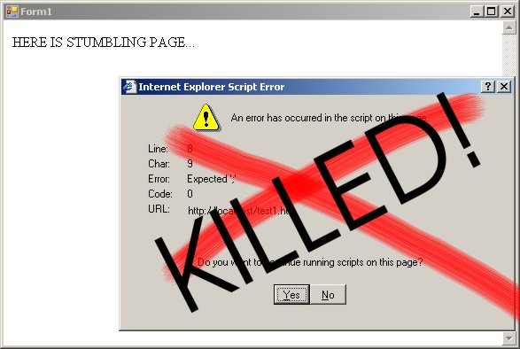

Introduction
Sometimes you may collide with the following problem: a third-party binary component or control embedded into your application displays windows (usually message boxes) that hang your code until they are closed.
If you do not have the source code of this binary and one does not have a good API to change one’s bad behaviour programmatically, it can be a real headache using the one. A famous example of such a binary is the WebBrowser control in .NET.
The following types of problems can occur:
- The component used in your code throws a pile of error messages and makes the user struggle through them to get the application working further. It is probably the most annoying case.
- The component displays a dialog box and waits for data entered there.
In both these cases, your code execution is suspended and exasperating windows appear on the desktop while you may want your code to work smoothly and silently without stumbling and the need of human intervention.
To solve these problems, you have to manage such windows from your code: close them, or even fill them with data and submit.
Important Notes
In this article, we consider managing windows originated by the WebBrowser control embedded into your application. It is a relatively common case. But actually the solution considered in this article can be applied to any control or binary used by your process.
The code is C#, but it consists of Win32 functions imported via interop. So actually the solution is in C++ and the attached code can be easily translated to C++ if it is needed.
Dialogs Opened by WebBrowser
Using WebBrowser control, you may face the following challenge: Web page downloaded by WebBrowser contains JavaScript which throws an error message. It is one of the reasons why WebBrowser can show a message box. A dialog box may also appear when the browser asks what to do with the navigated file: open or save. The browser can also ask for credentials or throw a security alert, etc.
The problem is that if such a dialog box is opened, WebBrowser object cannot be navigated to the next page and remains paralysed until the dialog is closed. Let’s see how it can be solved programmatically.
Solution
We'll follow a most plump and reliable way for our task that consists of the following steps:
- Intercepting Windows messages that correspond to window creation
- Getting a handle of the window that must be managed
- Closing the window or filling and submitting it (clicking OK)
Intercept Dialog Windows
The first thing that we have to do is monitor window creation from our code.
This can be done through Win32 API function SetWindowsHookEx that will invoke our callback method. This function can trace several events in Windows including creation of a window. To do it, we'll invoke it with flag WH_CALLWNDPROCRET that installs a hook procedure that monitors messages after they have been processed by the destination window procedure.
Each time as our callback function is invoked, we only have to filter message WM_SHOWWINDOW message that is sent to a window when the window is about to be hidden or shown.
Please look at the code below to realize the rest:
public class WindowInterceptor
{
IntPtr hook_id = IntPtr.Zero;
Win32.Functions.HookProc cbf;
public delegate void ProcessWindow(IntPtr hwnd);
ProcessWindow process_window;
IntPtr owner_window = IntPtr.Zero;
public WindowInterceptor(IntPtr owner_window, ProcessWindow process_window)
{
if (process_window == null)
throw new Exception("process_window cannot be null!");
this.process_window = process_window;
this.owner_window = owner_window;
cbf = new Win32.Functions.HookProc(dlg_box_hook_proc);
hook_id = Win32.Functions.SetWindowsHookEx(Win32.HookType.WH_CALLWNDPROCRET,
cbf, IntPtr.Zero, Win32.Functions.GetCurrentThreadId());
}
public void Stop()
{
if (hook_id != IntPtr.Zero)
Win32.Functions.UnhookWindowsHookEx(hook_id);
hook_id = IntPtr.Zero;
}
~WindowInterceptor()
{
if (hook_id != IntPtr.Zero)
Win32.Functions.UnhookWindowsHookEx(hook_id);
}
private IntPtr dlg_box_hook_proc(int nCode, IntPtr wParam, IntPtr lParam)
{
if (nCode < 0)
return Win32.Functions.CallNextHookEx(hook_id, nCode, wParam, lParam);
Win32.CWPRETSTRUCT msg = (Win32.CWPRETSTRUCT)Marshal.PtrToStructure
(lParam, typeof(Win32.CWPRETSTRUCT));
if (msg.message == (uint)Win32.Messages.WM_SHOWWINDOW)
{
int h = Win32.Functions.GetWindow(msg.hwnd, Win32.Functions.GW_OWNER);
if (owner_window == IntPtr.Zero || owner_window == new IntPtr(h))
{
if (process_window != null)
process_window(msg.hwnd);
}
}
return Win32.Functions.CallNextHookEx(hook_id, nCode, wParam, lParam);
}
}
Pay attention to one important thing: we filter only those messages that are addressed to windows owned by certain window. It is a trick needed since our own code can open windows as well and we do not want them to be intercepted and closed automatically. All windows originated by a control (in our case WebBrowser) will be owned by default by the form where they are placed. Thus window’s owner is a way to distinguish windows opened by WebBrowser from the rest of the windows opened by our code. Notice, to have this working, we should assign another owner to our own windows.
Another way to distinguish the unneeded windows from yours is filtering them by their caption text. Caption of a window can be obtained by Win32 function GetWindowText. It is also a good way since usually you know in advance what captions your windows will have.
Also remember a callback function (in the code Win32.Functions.HookProc cbf) invoked from unmanaged code must be a global variable within the class to avoid disposing.
Each time as the owner of the intercepted window is the specified one, the callback function invokes a delegate method where we defined how to treat the intercepted window, and passes the window’s handle to it.
Manage Window by Handle
Great! Having obtained a handle of the window, we can do what we want with it.
Close Dialog
To demo the ability we have now, I created a form where WebBrowser is placed and also a small HTML page with JavaScript. Upon loading this form, WebBrowser is navigated to this page:
<HTML>
<BODY>
HERE IS STUMBLING PAGE...
<script>
ERROR HERE!
</script>
<script>
alert("Error");
</script>
<br>OK NOW!
</BODY>
</HTML>
It will force our WebBrowser to display an alert message and suspend WebBrowser until the alert box is closed.
We want to close it from our code? No problem now. To do it, we create WindowInterceptor instance and pass a window handler delegate to it:
Form1 form = new Form1();
WindowInterceptor d = new WindowInterceptor(form.Handle, ProcessWindow1);
form.Show();
form.Navigate("http://localhost/test1.htm");
This is the window handler that will close a dialog window:
static void ProcessWindow1(IntPtr hwnd)
{
Win32.Functions.SendMessage(hwnd, (uint)Win32.Messages.WM_CLOSE, 0, 0);
}
That’s all about how to shut up WebBrowser in a simple and elegant manner.
Submit Dialog
Now let’s consider a more complex case: when you need to click a certain button in the intercepted window. For demo purposes, I created another HTML:
<HTML>
<BODY>
HERE IS STUMBLING PAGE #2...
<script>
if(confirm("Do you really want to go here?"))
navigate("http://www.google.com");
</script>
</BODY>
</HTML>
Assume we want to click “OK” in this confirm dialog. The code below does it:
static void ProcessWindow2(IntPtr hwnd)
{
IntPtr h =
(IntPtr)Win32.Functions.FindWindowEx(hwnd, IntPtr.Zero, "Button", "OK");
if (h != IntPtr.Zero)
{
Win32.Functions.SendMessage
((IntPtr)h, (uint)Win32.Messages.WM_LBUTTONDOWN, 0, 0);
Win32.Functions.SendMessage
((IntPtr)h, (uint)Win32.Messages.WM_LBUTTONUP, 0, 0);
}
}
Fill Controls Within Dialog
If certain fields within a dialog need to be filled with data (say login and password), they can be set by Win32 function SetWindowText. Handles of needed controls can be found in the same manner as we found the button “OK”.
Some controls like dropdown box do not have a text caption that could help us to find them. Instead of it, handles of such controls can be found by its class names passed to FindWindowEx.
But how do we find out their class names or captions that are hidden? To do it easily, use helpful tools like VS Spy++ or Winspector – they can display all information about controls hosted within a certain window.
This code looks for an edit box within an intercepted window and fills it with text:
static void ProcessWindow3(IntPtr hwnd)
{
IntPtr h =
(IntPtr)Win32.Functions.FindWindowEx(hwnd, IntPtr.Zero, "Edit", null);
if (h != IntPtr.Zero)
{
Win32.Functions.SetWindowText((IntPtr)h, "qwerty");
}
IntPtr h = (IntPtr)Win32.Functions.FindWindowEx(hwnd, IntPtr.Zero, "Button", "OK");
if (h != IntPtr.Zero)
{
Win32.Functions.SendMessage
((IntPtr)h, (uint)Win32.Messages.WM_LBUTTONDOWN, 0, 0);
Win32.Functions.SendMessage
((IntPtr)h, (uint)Win32.Messages.WM_LBUTTONUP, 0, 0);
}
else
{
Win32.Functions.SendMessage(hwnd, (uint)Win32.Messages.WM_CLOSE, 0, 0); }
}
}
Some Remarks
Sure, these samples are done for test purposes only. In real life, this approach helped me to play around two tasks: making WebBrowser silent and submitting credential dialog that appears before logging into a site so that WebBrowser was quite automated.
To be complete, the cases considered above could also be solved in other ways (any problem has more than one solution). Some of them can be solved by embedding self-written JavaScript into a downloaded page. Some of them can be solved by changing Internet Explorer user settings in registry. Credential dialog can be avoided by setting credentials using Internet Explorer API within our code, etc. But these ways are narrow and serve only special cases while the considered solution does not depend on third-party software used and so allows writing a reliable and simple code. BTW, in view of WebBrowser, as far as I investigated this problem, even using Internet Explorer API (a number of intricate interfaces) there is no way to suppress dialog boxes that the browser can throw in some cases.
Moreover, the behaviour of a control may be different from version to version. As a case of version incompatibility, you may draw attention to WebBrowser’s property Silent. I suppose it worked years ago in some Internet Explorer versions but seems not to be working under WinXP+SP2 with Internet Explorer 6. As a result, the app developed with confidence in this property may face a problem when Internet Explorer on the machine is upgraded.
Conclusion
The described solution can be successful when you have no civil way to settle windows originated by third-party components. In addition, it may have the following advantages before using the API of such components (if they have an API at all):
- It is simple
- It is reliable
- It does not depend on different versions of third-party software
- It keeps third-party software settings unchanged
Using the Code
In the attached code, you can find:
- The class
WindowInterceptor that monitors appearing dialog windows and calls a custom delegate method. This class can be used as a DLL from your code.
Test project with WebBrowser control- test1.html and test2.html with JavaScript. Do not forget to place them to your www directory and specify their URL in the
Test project.
Be happy!